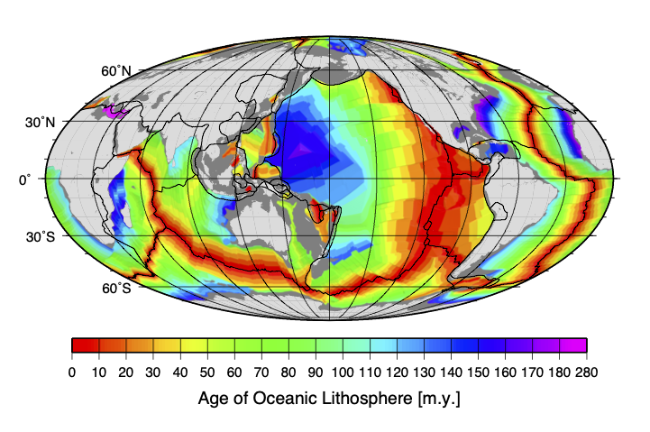

EMSC Week 11 - A detailed look at the depth-age relationship for the seafloor.#
We can obtain the global (ocean) age grid from the University of Sydney Earthbyte Group (https://www.earthbyte.org/age-spreading-rates-and-spreading-asymmetry-of-the-worlds-ocean-crust/). The data should look like this when plotted on a map.

Note: I downloaded this file: age.3.6.nc which is “A short integer netCDF formatted file. The age units are in millions of years, multiplied by 100 (to enable storage as short The file spans longitudes from 0 E to 360 E and latitudes from 90 N to -90 N. 6 minute resolution, gridline-registered.”
The ftp site where this data is stored does not serve the data in a way that xarray can read but otherwise it should be similar to what we did for the topography / bathymetry data.
Read the data and make a plot#
Let’s see if the data are what we expect given the Earthbyte image above.
We will need to import xarray to read the compressed file.
import xarray
import numpy as np
age_dataset = "data/age.3.6.nc"
age_data = xarray.open_dataset(age_dataset)
subs_data = age_data.sel(x=slice(-180,180, 1), y=slice(-90, 90, 1))
lons = subs_data.coords.get('x')
lats = subs_data.coords.get('y')
vals = subs_data['z']
x,y = np.meshgrid(lons.data, lats.data)
age = vals.data
age.shape
age.min()
age.max()
age[~np.isnan( age )].max()
help(np.isnan)
import matplotlib.pyplot as plt
%matplotlib inline
import cartopy.crs as ccrs
import cartopy.feature as cfeature
map_extent = (-180, 180,-90,90)
coastline = cfeature.NaturalEarthFeature('physical', 'coastline', '10m',
edgecolor=(1.0,0.8,0.0),
facecolor="none")
fig = plt.figure(figsize=(15, 10))
ax = plt.subplot(111, projection=ccrs.PlateCarree())
# ax.set_extent(map_extent)
ax.add_feature(coastline, edgecolor="black", linewidth=0.5, zorder=3)
ax.imshow(age, extent=map_extent, transform=ccrs.PlateCarree(),
cmap='RdYlBu', origin='lower', vmin=0.0, vmax=200)
# fig.savefig("AgeGrid.png", dpi=150)
Is this correct ?
Well, it does not look quite right but do you think the data are scrambled or is something else wrong?
Debugging#
Remember to read the description above. What is the range of age in the age array ? What do you expect for the Earth’s oceans ?
Hint: the minimum / maximum value of a numpy array can be obtained using .min() and .max(). For example
print(age.min(), age.max())
In this case, there are ‘illegal’ values in the array (‘NaN’ which means ‘not a number’) which signal that the dataset should be ignored at certain locations. Why is that ? Well, not everywhere is oceanic lithosphere with a well defined age.
You can filter out those illegal values:
seafloor_location = ~np.isnan(age)
print(age[seafloor_location].min(), age[seafloor_location].max())
Use this to check the range of the data and modify the map code accordingly.
## New code here !